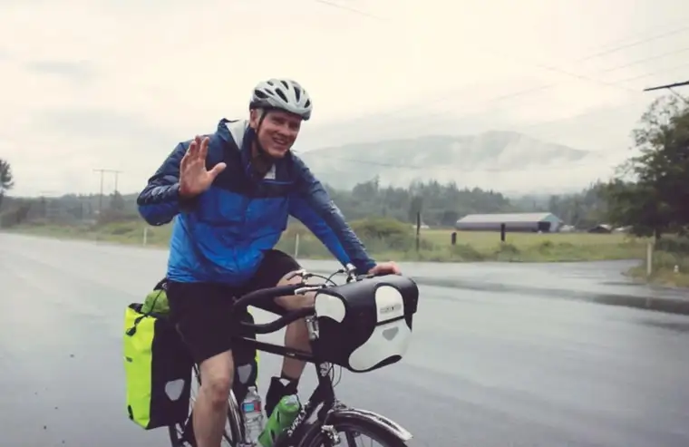

It was late 2015 when Skip Rodgers met the pastor from Lebanon who, though now serving in the United States, shared firsthand stories of Christian persecution in the Middle East.
Feeling the burden of his brothers and sisters in those faraway places, Rodgers wanted to act. So in mid-June, the 59-year-old Colorado man clocked out of his job at a children’s hospital to begin a bike trek across northern America.
In his ocean-to-ocean journey, “Ride for Hope and Mercy,” which included Fargo as a stopping point, Rodgers sought solidarity with those suffering through his own hardship.
“He purposely wanted to ‘do something hard’ to reach his goal,” notes a pre-trip article in the National Catholic Register. “That includes taking along only his tent, sleeping bag and two saddlebags of necessities.”
Rodgers’ ride also was featured on the One Billion Stories website.
According to a January CNN.com article, 2015 saw the worst persecution of Christians in modern history — much of it coming from the Middle East.
Rodgers set off on June 13 at Anacortes, Wash., at the Pacific Ocean and ended 55 days later, on Aug. 7, at the Atlantic in Bar Harbor, Maine.
Around the midway point, from Fargo on Day 23, July 5, Rodgers noted in his blog how friends from Littleton, Colo., Rich and Janet Deutsch, had arranged for him to stay with Rich’s brother, Dan, and his wife, Lida, Fargo. “This is a very nice and gracious couple,” Rodgers wrote. “… they have shown me mercy and generosity.”
Rodgers later shared how his wife Lee Ann helped from home. “She would call churches in towns where I was staying to see if I could sleep on their grass or stay in the rectory, or if there was a family that I could stay with.”
His visit here came with little fanfare. Tired from his journey across the state, he mostly groped for temporary refuge, which the Deutsch family provided.
After an exhale, they also took him on a brief tour around the city. Rodgers found the history of the Red River Valley interesting, noting in his blog how this area “known as the flattest part of the Earth” is “devoid of mountains and bedrock exposures.”
A downtown tour ended at St. Mary’s Cathedral, where Rodgers took time to pray in the adjoining adoration chapel, calling it later “the nicest” he’d ever seen, and writing about the involvement of Denver’s current archbishop, Samuel Aquila, previously of Fargo, in the chapel’s construction.
The Deutsches also brought Rodgers to Lindenwood Park and to a picnic at Jefferson Elementary, where they enjoyed a meal with others from the community.
Dan Deutsch says Rodgers’ visit increased his own awareness of, and appreciation for, the plight of Christians in the Middle East.
“We live in a great country, with so many resources for food and our lifestyle,” he says, adding that those in war-torn countries who are exposed to the elements and live in daily fear and hunger should concern us all. “No matter what their religion and background, they’re all at the same level when they’re in need.”
Rodgers later shared one of the “prettiest and more reflective moments” while in North Dakota, which happened early on Sunday, July 3, as he headed out from Hebron on Interstate 94.
“The stillness of the morning with some of the sky overcast was as beautiful a three-mile ride as any in the U.S.A.,” he says, noting the contrast to that of being awakened the night before, while camping on the grass at St. Anne’s Church, to sounds of fireworks and “the voices of young people enjoying their handiwork.”
Deutsch glimpsed the physical wear on Rodgers, but said he was struck by how little he complained. “He had saddle sores — those things are deep and painful — from sitting on that little bike seat all day long … but he hardly ever mentions it. He did have to spend an extra day of rest along the way to try to heal.”
Rodgers dealt with these inconveniences, he says, by uniting his pain, struggle, discomfort and weariness with Christians in the Middle East.
“If I was struggling with wind, rain or the length of the ride on a particular day,” he notes, “I would loudly pray, ‘Offer it up. It’s the least I can do.’ I would repeat this over and over for minutes.”
He also clung to words of other Christians who’ve suffered, like St. Josemaria Escrivá, who once said, “The person with fortitude is the one who perseveres in doing what his conscience tells him he ought to do. He does not measure the value of a task exclusively by the benefit he derives from it, but rather by the service he renders to others.”
Rodgers especially appreciated the people along the way, and their stories, he says, like the priest from Pakistan who hosted him in New Hampshire.
“Father Samuel made me an Indian dinner,” Rodgers says, sharing how he’d been shot and wounded for serving in Pakistan. “He suggested we have it pretty easy here in the U.S. compared to where he is from, the idea being that we will probably not lose a limb or risk death going to Mass here.”
The priest also questioned conditions such as depression and anxiety so common to our culture, noting the “everlasting joy” he sees so often on faces of the Pakistani people of faith. “They are very committed to their faith and families. They don’t have many of the distractions we have,” Rodgers recounted. “It was refreshing to talk with him.”
Rodgers says prayers said for him from home and beyond strengthened him greatly.
Now back in Colorado, he says he hopes to travel around the country at some point to share about the persecution of Christians, and stories from the road.
“When we talk about doing the least, how does that apply to our family, neighbors, friend and those that we struggle with?” he asks, adding that he’d also like to talk about the religious persecution that happens here, to convey “the importance of standing boldly for the freedoms that we have, and to protect those freedoms.”
Rodgers says the spiritual life requires we all do something “hard,” whether it takes 54 days or 15 minutes a day. “We should go outside our comfort zone. The mind and will is stronger than we think, especially with prayer.”